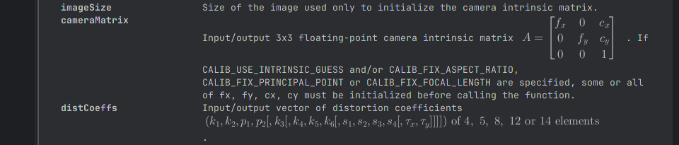
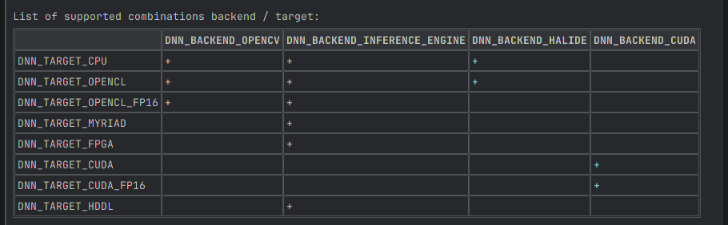
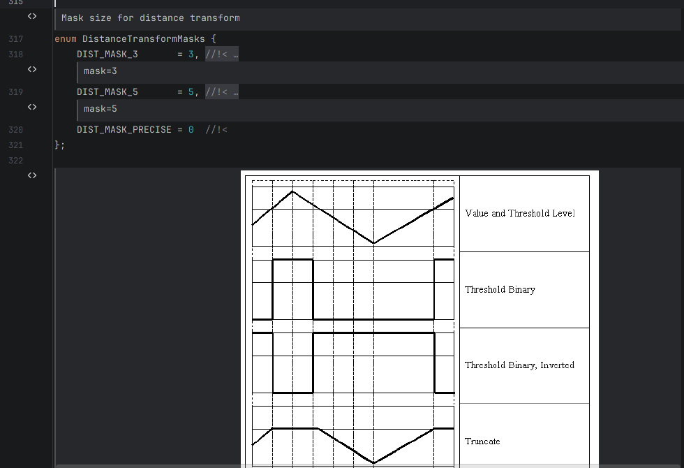
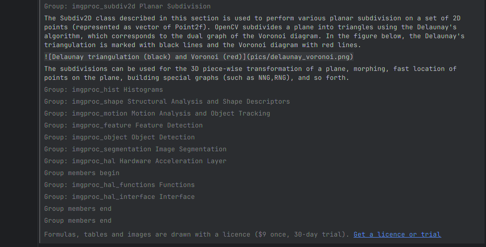

Watch it work
What CLion already does. CLion already does part of this, and we say so. Its Rendered View (Ctrl+Alt+Q) groups a comment's Doxygen tags, and for comments with only tags and plain sentences it may be all you need. Per its help page it cannot open links, and on 2026-11-16 Markdown and LaTeX in comments were still open requests on JetBrains' tracker. We have read that, not run it.
In the IDE, for real
Docsheen 1.0.1, IntelliJ IDEA 2025.3, OpenCV 4.14.0's own headers (not affiliated). Paid features shown with a test licence: the listing is not live. Images link to the full window.


intrin_cpp.hpp.


Known limits
- The editor only; the Quick Documentation popup stays the IDE's. Where the IDE's Rendered View already shows a comment, Docsheen leaves it: press Ctrl+Alt+Q on it, or untick Render documentation comments.
- C and C++ files. A pipe table needs a blank line above it: in OpenCV's
dnn.hppandoperations.hppa table follows a sentence directly and shows as text. LaTeX means standard math, not packages. All limits.
Get it on JetBrains Marketplace
Listing in review: not on JetBrains Marketplace yet.
How we tested
- OpenCV 4.14.0, 33 headers: 4,699 comments drawn with all their text; 1,819 of 1,819 formulas typeset without an error, with OpenCV's macro file.
- Against Doxygen 1.9.8 on
imgproc.hpp: headings, lists, code spans, links and emphasis equal on 631 of 633 comments. imgproc.hpp(5,251 lines, 760 comments) drawn in a median 1.2 s off the UI thread; Docsheen's longest UI-thread block: median 11 ms, worst 70 ms (no window).- 157 automated tests, 0 failed. Window checks: IntelliJ IDEA 2025.3, 24 of 24 steps; 2026.3, 20 of 24. The full table.
End User License Agreement · no network calls, no telemetry (privacy) · Docsheen is affiliated with JetBrains, OpenCV and Doxygen in no way.